유통관리사-2급 (2017-11-12 기출문제)
1과목: 유통물류일반
1. 소매업태 발전에 관한 이론 중 소매차륜(수레바퀴)이론에 해당하는 내용으로 옳은 것은?
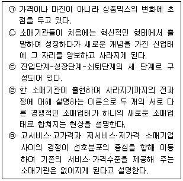
- ㉠, ㉡
- ㉡, ㉢
- ㉢, ㉣
- ㉣, ㉤
- ㉠, ㉢, ㉤
(정답률: 64%)

2. 발주 및 발주시점관리에 관련된 내용으로 가장 옳지 않은 것은?
- 발주시점관리란 재고가 품절되지도 과잉되지도 않게 발주시점을 관리하는 것을 의미한다.
- 재고유지비, 재고부족비, 주문비의 관계에서 전체 비용이 최소가 되는 점이 최적주문량이 된다.
- 발주에서 입고까지의 조달기간의 평균 판매량에 안전재고량을 더한 것이 발주점이다.
- 정기발주는 주로 부정량발주를 하게 되는데 이는 정기적으로 필요한 재고량을 파악하여 주문하는 방식이다.
- 경제적 주문량(EOQ) 공식에서는 주문비와 재고유지비가 항상 변동하는 것으로 본다.
(정답률: 63%)
3. 다음 글상자에서 설명하는 이것에 해당하는 것은?
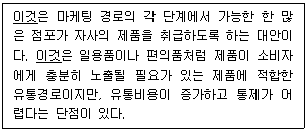
- 집중적 유통경로(intensive channel)
- 선택적 유통경로(selective channel)
- 전속적 유통경로(exclusive channel)
- 세분적 유통경로(segmented channel)
- 네트워크 유통경로(network channel)
(정답률: 64%)
4. 수직적 마케팅 시스템의 계약형 경로에 해당하지 않는 것은?
- 소매상 협동조합
- 제품 유통형 프랜차이즈
- 사업형 프랜차이즈
- 도매상 후원 자발적 연쇄점
- SPA브랜드
(정답률: 63%)
5. 수배송계획 중 가장 장기계획의 범주에 속하는 것은?
- 운임변경
- 혼재계획
- 수배송 일정계획
- 수배송 노선선정
- 수배송망의 구축
(정답률: 62%)
6. 멀티채널(multi-channel) 및 옴니채널(omni-channel)에 대한 내용으로 옳은 것은?
- 멀티채널은 소비자가 온라인, 오프라인, 모바일 등 다양한 경로를 넘나들며 상품을 검색하고 구매할 수 있도록 한 서비스를 말한다.
- 멀티채널은 각 유통채널의 특성을 합쳐, 어떤 채널이든 같은 매장을 이용하는 것처럼 느낄 수 있도록 한다.
- 옴니채널은 각 채널을 독립적으로 운영하여 온오프라인이 경쟁관계라고 한다면, 멀티채널은 고객중심의 유기적 채널로 온오프라인이 상생관계라는 점에서 다르다.
- 최근 유통산업은 옴니채널에서 멀티채널로 진보하고 있다.
- 옴니채널은 스마트폰 근거리 통신기술을 이용하여 편의점을 지나는 고객에게 할인쿠폰을 지급하는 형태로도 활용된다.
(정답률: 60%)
7. 상품계열의 폭(수)과 상품 계열 내의 상품의 깊이(가지수) 측면에서 기술한 내용으로 가장 옳지 않은 것은?(문제 오류로 가답안 발표시 5번으로 발표되었지만 확정답안 발표시 1, 4, 5번이 정답처리 되었습니다. 여기서는 가답안인 5번을 누르시면 정답 처리 됩니다.)
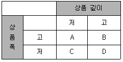
- A에는 전문점이 포함된다.
- B에는 저회전, 고마진 전략을 취하는 백화점 등이 해당된다.
- C는 일반적으로 소비자가 선호하는 형태의 소매점이 아니다.
- D에는 고회전, 저마진 전략을 취하는 할인점 등이 해당된다.
- D에는 편의점이 포함된다.
(정답률: 78%)
8. 수요예측 방법 중에서 정성적 분석법에 해당하는 것은?
- 델파이분석
- 시계열분석
- 이동평균법
- 다중회귀분석
- 지수평활법
(정답률: 68%)
9. 다음 글상자의 ㉠~㉣ 중 중앙집권적 소매조직에 관련된 내용으로 옳은 것을 모두 고르면?
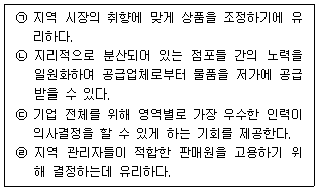
- ㉠, ㉡
- ㉠, ㉢
- ㉠, ㉣
- ㉡, ㉢
- ㉢, ㉣
(정답률: 44%)
10. 다음 글상자에서 설명하는 이것을 도입하여 운용할 경우, 화주회사 측이 가질 수 있는 장점으로 볼 수 없는 것은?
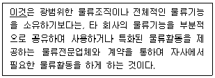
- 물류비용 절감
- 물류운영, 관리노하우 습득으로 전문성 강화
- 잉여자원을 고부가가치사업에 투자 가능
- 물류부문별 경쟁력을 보유하고 있는 기업을 활용하는 공급체인에서 유리한 위치 확보가능
- 물류서비스 질과 유연성 향상에 따른 고객서비스 수준의 향상
(정답률: 54%)
11. 종업원들에 대한 동기부여이론 중 다음 글상자의 내용과 같은 시사점을 주는 이론은?
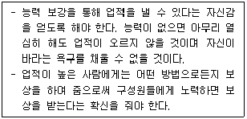
- 욕구단계설
- 2요인이론
- 기대이론
- 공정성이론
- 성취동기이론
(정답률: 30%)
12. 쇼핑을 하면서 여가도 즐길 수 있도록 의류 및 잡화를 판매하는 매장은 물론 영화관, 식당 등을 포함한 대규모 상업시설을 의미하는 소매업태의 형태는?
- 아울렛
- 백화점
- 대형마트
- 복합쇼핑몰
- 창고형 할인매장
(정답률: 79%)
13. 공급사슬관리에서 반복적으로 발생하는 문제점 중의 하나인 채찍효과(bullwhip effect)의 원인이라고 보기 어려운 것은?
- 부정확한 수요예측
- 생산업체의 유동적인 제품 가격정책
- 짧은 리드타임
- 도ㆍ소매상의 일괄주문
- 도ㆍ소매상의 과잉주문
(정답률: 66%)
14. 다음의 자료를 이용하여 손익분기점(break-even point) 매출액을 구하면?
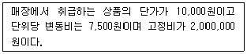
- 8,000,000원
- 2,666,667원
- 1,142,857원
- 4,000,000원
- 2,500,000원
(정답률: 36%)
15. ( ㉠ ), ( ㉡ ), ( ㉢ ) 안에 들어갈 용어로 옳은 것은?
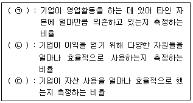
- ㉠ 레버리지 비율, ㉡ 활동성 비율, ㉢ 수익성비율
- ㉠ 레버리지 비율, ㉡ 수익성 비율, ㉢ 활동성 비율
- ㉠ 유동성 비율, ㉡ 수익성 비율, ㉢ 활동성 비율
- ㉠ 유동성 비율, ㉡ 활동성 비율, ㉢ 레버리지 비율
- ㉠ 활동성 비율, ㉡ 레버리지 비율, ㉢ 유동성 비율
(정답률: 47%)
16. 유통경로 시스템의 힘의 원천과 예시로 옳지 않은 것은?
- 보상력 : 높은 마진의 허용, 판촉물 제공
- 강압력 : 마진폭 인하, 판매독점권 철회
- 합법력 : 거래 당사자의 관행, 계약에 따라 인정되는 권리
- 준거력 : 유명 소매업체에 유통시킨다는 긍지
- 전문력 : 오랜 경영관리에 대한 상담과 조언, 밀어내기
(정답률: 53%)
17. 경영전략 수립과정에서 가치사슬(value chain)에 의해 차별화우위를 분석할 때 기업의 다양한 활동을 주활동(primary activities)과 보조활동(support activities)으로 구분한다. 아래에 제시한 항목 중에서 보조활동에만 해당되는 것은?
- 기술연구, 대리점지원
- 재무, 생산
- MIS, 물류
- 기획, 디자인
- 재고보유, 고객서비스
(정답률: 31%)
18. 다음 글상자는 올더슨(W. Alderson)의 구색창출과정(sorting process)에 관한 내용이다. ( ㉠ ), ( ㉡ )안에 들어갈 용어로 올바르게 짝지어진 것은?
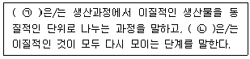
- ㉠ 배분(allocation), ㉡ 집적(accumulation)
- ㉠ 분류(sorting out), ㉡ 구색(assortment)
- ㉠ 배분(allocation), ㉡ 구색(assortment)
- ㉠ 집적(accumulation), ㉡ 배분(allocation)
- ㉠ 구색(assortment), ㉡ 집적(accumulation)
(정답률: 52%)
19. 깊이 있는 구색을 가진 한정된 품목을 저가격, 대량으로 판매하는 업태로 옳은 것은?
- 수퍼센터(super center)
- 창고형 도소매업(membership warehouse club)
- 카테고리 킬러(category killer)
- 파워센터(power center)
- 할인점(discount store)
(정답률: 64%)
20. ( ㉠ ), ( ㉡ ), ( ㉢ )안에 들어갈 용어를 순서대로 올바르게 나열한 것은?
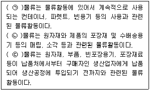
- ㉠ 반품, ㉡ 폐기, ㉢ 조달
- ㉠ 반품, ㉡ 폐기, ㉢ 생산
- ㉠ 반품, ㉡ 조달, ㉢ 판매
- ㉠ 회수, ㉡ 폐기, ㉢ 생산
- ㉠ 회수, ㉡ 폐기, ㉢ 조달
(정답률: 66%)
21. 유통경로의 설계에 영향을 미치는 시장 특성에 대한 내용으로 옳은 것은?
- 시장지리(market geography)는 지리적 영역단위당 구매자의 수를 말한다.
- 시장밀도(market density)는 생산자와 소비자까지의 물리적인 거리차이로 계산한다.
- 시장크기(market size)는 시장을 구성하는 소비자들의 수에 의하여 결정된다.
- 시장밀도(market density)의 경우 장거리와 단거리의 거리편의성이 고객만족에 중요한 영향을 준다.
- 제조업체가 직접채널에 의해 커버할 시장의 크기가 크다면 비용감소 효과가 발생한다.
(정답률: 55%)
22. 유통업체에서 성과 및 손익분석을 위해 많이 사용하는 아래의 재무적 분석 기법 중 고정비는 고려하지 않고 변동비만 고려하여 분석한다는 측면에서 다른 기법과 구별되는 것은?
- GMROS(Gross Margin Return On Selling area)
- DPP(Direct Product Profitability)
- ABC(Activity-Based Costing)
- GMROI(Gross Margin Return On Inventory investment)
- GMROL(Gross Margin Return On Labor)
(정답률: 29%)
23. 신속하고 효율적인 물류시스템의 실행을 위한 ㉠ QR(quick response)과 ㉡ ECR(efficient customer response)는 주로 어떤 산업에서 각각 유래하였는가?
- ㉠ 의류산업, ㉡ 제약산업
- ㉠ 제약산업, ㉡ 자동차산업
- ㉠ 의류산업, ㉡ 식품산업
- ㉠ 식품산업, ㉡ 의류산업
- ㉠ 자동차산업, ㉡ 제약산업
(정답률: 63%)
24. 상품 카테고리관리를 위한 척도에서 산출(output)과 관련된 자료로만 올바르게 나열한 것은?
- 순매출액, 매출성장, 재고수준
- 총수익, 매출성장, 순매출액
- 상품원가, 광고비, 재고수준
- 재고수준, 가격인하액, 광고비
- 순매출액, 재고수준, 재고회전
(정답률: 71%)
25. 물류에 대한 내용으로 옳지 않은 것은?
- 수송비는 제품의 밀도, 가치, 부패가능성, 충격에의 민감도 등에 영향을 받는다.
- 선적되는 제품양이 많을수록 주어진 거리내의 단위당 운송비는 낮아진다.
- 수송거리는 운송비에 영향을 미치는 요인으로 수송거리가 길수록 단위거리당 수송비는 낮아진다.
- 재고의 지리적 분산정도가 낮기를 원하는 기업은 소수의 대형배송센터를 건설하고 각 배송센터에서 취급되는 품목들의 수와 양을 확대할 것이다.
- 수송비와 재고비는 비례관계이기 때문에 이들의 비용의 합을 고려한 비용을 최소화하며 고객서비스 향상을 충족하는 것은 중요하다.
(정답률: 44%)
2과목: 상권분석
26. 점포 입지를 선정할 때 상품물류비용을 고려할 필요성이 가장 낮은 도·소매상은?
- 완전기능도매상
- 중개상(broker)
- 대형마트
- 판매 대리상(agent)
- 백화점
(정답률: 55%)
27. 서로 마주보는 점포들이 선형으로 배치되고 그 사이로 보행자 통로가 존재하는 형태이며, 보행자 통로의 양쪽 끝에 백화점과 같은 핵심점포를 배치하는 쇼핑센터의 건물배치 유형은?
- 선형 쇼핑센터
- 몰(mall)형 쇼핑센터
- 군집형 쇼핑센터
- L형 쇼핑센터
- U형 쇼핑센터
(정답률: 43%)
28. 일반적으로 소매점포의 입지조건을 유리한 입지와 불리한 입지로 구분할 때 가장 옳지 않은 것은?
- 주도로보다는 보조도로에 접한 내부획지(inside parcels)가 유리한 입지이다.
- 점포와 접한 도로에 중앙분리대가 있는 경우에는 불리한 입지이다.
- 방사형 도로의 경우 교차점에 가까운 입지가 유리한 입지이다.
- 곡선형 커브(curve)가 있는 도로에서는 안쪽보다 바깥쪽 입지가 유리한 입지이다.
- T형 교차로의 막다른 길에 있는 입지는 불리한 입지이다.
(정답률: 62%)
29. 상권에 대한 일반적 사실들을 설명한 내용으로 가장 옳지 않은 것은?
- 상권은 점포를 이용하는 소비자들이 분포하는 공간적 범위를 말하는데 점포의 매출이 발생하는 지역범위를 의미하기도 한다.
- 현실에서 상권의 형태는 대부분 점포가 위치한 지점으로부터 일정거리를 반지름으로 하는 동심원이다.
- 상권은 단독점포의 상권과 복수점포의 상권, 현재상권과 잠재상권, 거주상권과 생활상권 등의 기준으로 구분할 수 있다.
- 상권은 판매행위가 이루어지는 판매권, 제품과 서비스의 구매자를 포함하는 지역인 시장권, 거래상대방이 소재하는 거래권으로 보기도 한다.
- 한계상권(3차상권)은 일반적으로 점포를 이용하는 전체소비자를 빠짐없이 포괄하는 범위까지를 경계로 하는 것은 아니다.
(정답률: 40%)
30. 넬슨(Nelson)의 입지선정 8원칙 개념에 대한 설명으로 옳지 않은 것은?
- 상권잠재력 – 영업의 형태가 비슷하거나 동일한 점포가 집중적으로 몰려있어 고객의 흡입력을 극대화할 수 있는지 고려해야 함
- 접근가능성 – 고객이 찾아오기 쉬운 점포로 대중교통과 주차장 등을 고려해야 함
- 중간저지성 – 잘 알려진 점포로 가는 길목에 있는 입지를 선택하는 것도 좋음
- 양립성 – 상호보완 관계에 있는 업종의 점포가 서로 인접하면 고객의 유입을 증가시킬 수 있음
- 경쟁회피성 – 가능하다면 주변에 경쟁점포가 없는 입지를 선택하고 경쟁점의 규모 등을 감안해야 함
(정답률: 54%)
31. 크리스탈러(Christaller)의 중심지이론과 관련된 개념, 가정에 대한 설명으로 옳지 않은 것은?
- 중심지란 배후지의 거주자들에게 재화와 서비스를 제공하는 상업기능이 밀집된 장소를 말한다.
- 배후지란 중심지에 의해 서비스를 제공받는 주변지역으로서 구매력이 균등하게 분포하고 끝이 없이 동질적인 평지라고 가정한다.
- 중심지기능의 최대도달거리(도달범위)는 중심지에서 제공되는 상품의 가격과 소비자가 그것을 구입하는데 드는 교통비에 의해 결정된다.
- 도달범위란 중심지 활동이 제공되는 공간적 한계를 말하는데 중심지로부터 어느 재화에 대한 수요가 1이 되는 곳까지의 거리를 의미한다.
- 상업중심지의 정상이윤 확보에 필요한 최소한의 수요를 발생시키는 상권범위를 최소수요 충족거리라고 한다.
(정답률: 27%)
32. 회귀모델을 점포입지결정이나 상권분석에 활용할 때의 장단점으로 옳지 않은 것은?
- 점포의 성과에 대한 여러 변수들의 상대적인 영향력 분석이 가능하다.
- 점포의 성과와 관련된 많은 변수들을 상권분석에 고려할 수 있다.
- 회귀모델을 시간 흐름에 따라 개선해 나갈 수 없어 확장성과 융통성이 부족하다.
- 분석대상과 유사한 상권특성을 가진 점포들의 표본을 충분히 확보하기 어렵다.
- 독립변수들이 상호관련성이 없다는 가정은 현실성이 없는 경우가 많아 주의해야 한다.
(정답률: 47%)
33. 아래 특징을 가지는 상권분석 기법은?
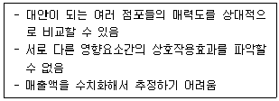
- 체크리스트법
- MNL모델
- 회귀모델
- Huff모델
- 유사점포법
(정답률: 59%)
34. 월매출액을 추정하는 아래의 공식에서 ( ㉠ )에 들어갈 용어로 옳은 것은?
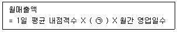
- 내점율
- 객단가
- 상권내 점포점유율
- 실구매율
- 회전율
(정답률: 43%)
35. 글상자에서 설명하고 있는 시설로 가장 옳은 것은?
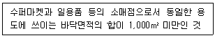
- 제1종 근린생활시설
- 제2종 근린생활시설
- 근린공공시설
- 일반판매시설
- 특수판매시설
(정답률: 27%)
36. 상권분석방법은 규범적 모형과 기술적 방법(descriptive method)으로 구분될 수 있다. 이 중 기술적 방법에 포함될 수 있는 것은?
- 공간적 상호작용모델
- 중심지이론
- 유추법
- 라일리(Reilly)의 소매인력이론
- 컨버스(Converse)의 소매분기점
(정답률: 53%)
37. 입지는 주요 대상고객의 유형에 따라 유동인구 중심의 '적응형', 목적구매고객 중심의 '목적형', 주민 중심의 '생활형' 등으로 분류할 수 있다. 다음 중 소매점 유형과 적합한 입지 유형을 연결한 것으로 가장 옳지 않은 것은?
- 도심의 편의점 - 적응형
- 도시 외곽의 오디오전문점 - 목적형
- 도심의 고급귀금속점 - 적응형
- 근린형 쇼핑센터의 수퍼마켓 - 생활형
- 도심의 패스트푸드점 - 적응형
(정답률: 61%)
38. 특정지역 상권의 전반적인 수요를 평가하는데 활용되는 구매력지수(BPI)에 대한 설명으로 옳지 않은 것은?
- 지역상권 수요에 영향을 미치는 핵심변수를 선정하고, 이에 일정한 가중치를 부여하여 지수화한 것이다.
- 전체 인구에서 해당 지역 인구가 차지하는 비율을 반영한다.
- 전체 매장면적에서 해당 지역의 매장면적이 차지하는 비율을 반영한다.
- 전체 가처분소득(또는 유효소득)에서 해당 지역의 가처분소득(또는 유효소득)이 차지하는 비율을 반영한다.
- 전체 소매매출에서 해당 지역의 소매매출이 차지하는 비율을 반영한다.
(정답률: 51%)
39. 소매점에 관한 상권분석과 입지분석을 구분할 때 상권분석의 목적으로 가장 옳지 않은 것은?
- 예상 내점고객의 파악 및 특성 분석
- 특정 점포의 가시성과 접근성 평가
- 차별적 마케팅 전략의 수립
- 시장점유율의 예측 및 평가
- 복수의 점포 대안 중 최적 점포 선택
(정답률: 47%)
40. A, B, C 세 점포의 크기와 소비자의 집으로부터 각 점포까지의 거리는 아래와 같다. 이 경우 Huff 모델을 적용하였을 때 이 소비자가 구매확률이 가장 높은 점포 및 그 점포를 선택할 확률은? (가정 : 이 소비자는 A, B, C 세 점포들에서만 상품을 구매할 수 있음. 소비자가 부여하는 점포 크기에 대한 효용은 1, 거리에 대한 효용은 -2임.)
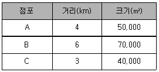
- A, 약 12.3%
- B, 약 35.5%
- B, 약 57.3%
- C, 약 35.5%
- C, 약 46.7%
(정답률: 33%)
41. 라일리(Reilly)의 소매인력법칙과 관련한 설명으로 옳지 않은 것은?
- 뉴턴(Newton)의 중력법칙을 상권분석에 활용한 것이다.
- 도시규모가 클수록 주변의 소비자를 흡인하는 매력도가 커진다고 가정한다.
- 쇼핑시 주변도시의 매력도는 이동거리의 제곱에 반비례 한다고 가정한다.
- 광역상권의 경쟁상황에서 쇼핑센터의 매출액 추정에도 활용할 수 있다.
- 거리, 인구 뿐만 아니라 매장면적, 가격 등 최소한의 변수를 활용할 수 있다.
(정답률: 42%)
42. 중심상업지역(CBD : Central Business District)의 입지특성에 대한 설명으로 옳지 않은 것은?
- 소도시나 대도시의 전통적인 도심지역을 말한다.
- 대중교통의 중심이며, 도보통행량이 매우 적다.
- 상업활동으로도 많은 사람을 유인하지만 출퇴근을 위해서도 이곳을 통과하는 사람이 많다.
- 주차문제, 교통혼잡 등이 교외 쇼핑객들의 진입을 방해하기도 한다.
- 백화점, 전문점, 은행 등이 밀집되어 있다.
(정답률: 67%)
43. Huff모델과 관련한 설명으로 옳지 않은 것은?
- 소비자의 점포선택행동을 결정적 현상으로 본다.
- 소비자로부터 점포까지의 이동거리는 소요시간으로 대체하여 계산하기도 한다.
- 소매상권이 연속적이고 중복적인 공간이라는 관점에서 분석한다.
- 특정 점포의 효용이 다른 선택대안 점포들의 효용보다 클수록 그 점포의 선택가능성이 높아진다.
- 점포크기 및 이동거리에 대한 민감도계수는 상권마다 소비자의 실제구매행동 자료를 통해 추정한다.
(정답률: 29%)
44. 신규점포의 개설과정에서 소매점포의 일반적인 전략수립과정을 가장 올바르게 나열한 것은?
- 점포계획 → 입지선정 → 상권분석 → 소매믹스설계
- 점포계획 → 상권분석 → 입지선정 → 소매믹스설계
- 상권분석 → 입지선정 → 점포계획 → 소매믹스설계
- 상권분석 → 점포계획 → 입지선정 → 소매믹스설계
- 입지선정 → 상권분석 → 점포계획 → 소매믹스설계
(정답률: 36%)
45. 두 개 이상의 점포를 운영하는 경우 소매점포 네트워크의 설계, 신규점포 개설시 기존 네트워크에 대한 영향 분석, 기존점포의 재입지 또는 폐점 의사결정 등의 상황에서 유용하게 활용될 수 있는 분석방법은?
- 입지배정모형
- 회귀분석모형
- 라일리(Reilly)모형
- MCI모형
- 시장점유율모형
(정답률: 37%)
3과목: 유통마케팅
46. 점포 레이아웃에 대한 설명으로 가장 옳지 않은 것은?
- 구석구석까지 고객의 흐름을 원활하게 유도하도록 설계한다.
- 상품운반이 용이하고 고객의 이동은 방해받지 않도록 통로를 구성한다.
- 구매를 촉진시키기 위해 연관성 있는 상품을 한 곳에 모은다.
- 고객의 라이프스타일에 따라 상품을 결합하여 고객의 불필요한 동선을 줄인다.
- 고객 동선은 가능한 한 짧게, 작업 동선은 가능한 한 길게 한다.
(정답률: 71%)
47. 다음 글상자에서 설명하고 있는 용어는?
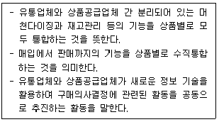
- 상품 카테고리 관리
- 구색 계획
- 단품 관리
- 상품 라인 확장
- 세그먼트 머천다이징
(정답률: 36%)
48. 생산업체가 2개, 소매상이 2개, 소비자가 4명일 경우 발생할 수 있는 총 거래의 수는 몇 개인가?
- 6
- 8
- 10
- 12
- 16
(정답률: 36%)
49. 가격 중심의 머천다이징에 대한 설명으로 가장 옳지 않은 것은?
- 비용을 최대한 줄여 소비자에게 상품을 저렴하게 제공하는 것에 중점을 둔다.
- 고객 니즈에 대한 부응과 서비스 향상을 통해 매출을 증가시키는 것을 주목적으로 한다.
- 대형할인점 및 카테고리 킬러 등 가격 파괴 유통업태가 주로 실행한다.
- 판촉 등의 판매활동보다는 상품계획, 구매, 재고분야에 대한 집중적인 관리가 요구된다.
- 상품 공급과 관련된 관계회사 연결 머천다이징이 이익증가의 수단이 된다.
(정답률: 49%)
50. 다음 글상자에서 설명하는 표본추출방법은?
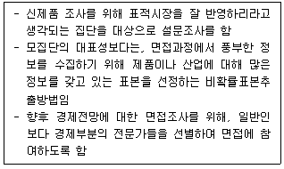
- 편의표본추출(convenience sampling)
- 판단표본추출(judgement sampling)
- 할당표본추출(quota sampling)
- 집락표본추출(cluster sampling)
- 층화표본추출(stratified sampling)
(정답률: 51%)
51. 마케팅조사의 자료 중 1차 자료에 대한 설명으로 가장 옳지 않은 것은?
- 문제해결을 위한 조사 설계에 근거하여 수집되는 정보이다.
- 정확도, 신뢰도, 타당성 평가가 가능하다.
- 상대적으로 신속한 수집이 가능해 시간과 비용을 상당히 절약할 수 있다.
- 기업 이미지분석을 위해 모은 고객서베이자료는 1차자료에 해당한다.
- 관찰조사, 실험조사, 설문조사 등으로 직접 수집한 자료이다.
(정답률: 56%)
52. 유통산업발전법에서 명시적이고 직접적으로 규정하고 있는 유통관리사의 직무에 해당하지 않는 것은?
- 유통경영・관리 기법의 향상
- 유통경영・관리와 관련한 계획ㆍ조사ㆍ연구
- 유통경영・관리와 관련한 교육
- 유통경영・관리와 관련한 진단ㆍ평가
- 유통경영・관리와 관련한 상담ㆍ자문
(정답률: 51%)
53. 프랜차이즈 시스템에서 가맹점이 누릴 수 있는 혜택으로 볼 수 없는 것은?
- 상품 개발 및 일반적 점포관리사항을 본부에서 관리해 주기 때문에 가맹점은 판매활동에 전념할 수 있다.
- 본부의 교육프로그램과 경영방식에 대한 경영지도에 의해 가맹점은 사업 경험이 없더라도 상대적으로 쉽게 사업을 운영할 수 있다.
- 본부가 전국적인 정보력을 바탕으로 경영지원을 하기 때문에 가맹점은 특정 상권의 개별 상황을 보다 잘 반영한 점포별 마케팅 활동이 용이하다.
- 본부가 공동 집중구매를 통해 상품과 원재료를 공급하기 때문에 가맹점은 상품공급면에서 균일성과 안정성을 유지할 수 있다.
- 본부에서 전국적으로 일괄적인 촉진활동을 벌이기 때문에 가맹점의 개별적 촉진활동 보다 통일된 촉진활동이 가능하다.
(정답률: 59%)
54. 재고와 판매공간에 대한 수익률을 분석하기 위해 활용하는 GMROI(Gross Margin Return On Inventory investment)와 GMROS(Gross Margin Return On Selling area)에 대한 설명으로 옳지 않은 것은?
- 유통경로상에서 추가 또는 제거해야 할 품목의 결정에 도움을 준다.
- 문제가 되는 상품계열의 수익성을 향상시키기 위한 머천다이징 전략을 강구할 수 있다.
- 공급업자에게 더 많은 판매촉진과 배달시간 개선을 요구할 수 있는 근거가 된다.
- 두 가지 척도 모두 단기적 수익성보다는 장기적 수익성을 측정하는 척도이다.
- 매출채권과 외상매입금 등은 재고투자의 계산에 포함되어 있지 않다.
(정답률: 39%)
55. 점포의 판매공간에서 활용하는 용어에 대한 설명으로 옳지 않은 것은?
- 랙(rack) - 상품 진열 혹은 보관을 위해 사용되는 기둥과 선반으로 구성된 구조물
- 블랙룸(black room) - 점포에서 고객이 들어갈 수 없는 시설 또는 공간
- 일배식품 – 일일배송 상품으로 매일 일정한 시간대에 점포로 배송하는 상품
- 페이싱(facing) - 그룹화된 상품의 배치로서 관련 상품을 한 곳에 모아두는 것
- 샌드위치진열 – 진열대 내에서 잘 팔리는 상품 곁에 이익은 높으나 잘 팔리지 않는 상품을 진열하는 것
(정답률: 65%)
56. 서비스품질(SERVQUAL)의 구성차원과 가장 관련이 없는 것은?
- 유형성(tangible)
- 신뢰성(reliability)
- 공감성(empathy)
- 확신성(assurance)
- 정보성(information)
(정답률: 48%)
57. 플래노그램(planogram)에 대한 설명으로 가장 옳지 않은 것은?
- 사용자가 모델번호, 제품마진, 회전율, 제품 포장의 크기 등 관련정보를 입력해야 한다.
- 소매업체가 정한 우선순위를 바탕으로 컴퓨터 프로그램을 활용해 플래노그램을 작성할 수 있다.
- 과거의 웨보그램(webogram)을 개선하여 발전시킨 것이다.
- 상품을 점포 내에 어디에 어떻게 진열하는 것이 효과적인지를 알 수 있다.
- 진열공간의 생산성을 평가하게 해주는 지침이나 분석프로그램에 해당한다.
(정답률: 38%)
58. 다음 글상자 안의 진열에 대한 설명으로 옳은 것을 모두 고르면?
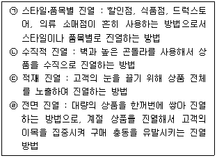
- ㉠, ㉡
- ㉠, ㉢
- ㉡, ㉢
- ㉢, ㉣
- ㉡, ㉣
(정답률: 60%)
59. 다음 자료를 이용하여 A소매기업의 2017년 매출총이익과 매출총이익률을 계산한 것으로 옳은 것은?
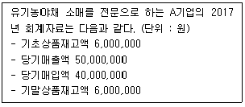
- 1,000,000원, 10%
- 1,000,000원, 20%
- 10,000,000원, 10%
- 10,000,000원, 20%
- 600,000원, 10%
(정답률: 30%)
60. 판매서비스는 거래완결서비스, 상품ㆍ서비스의 가치를 높이기 위한 가치증진서비스, 품질 관리를 포함한다. 다음 중 가치증진서비스에 해당하는 것은?
- 고객 요구와 상황에 맞는 조언과 자문의 제공
- 상품 및 서비스의 구입 방식에 관한 정보 제공
- 상품 및 서비스의 정확한 전달을 보장하는 주문처리
- 명료하고 정확하며 이해가 용이한 청구서의 발급
- 단순하고 편리하게 설계된 대금 지불과정의 구축
(정답률: 44%)
61. ( ㉠ ), ( ㉡ )안에 들어갈 용어로 옳은 것은?
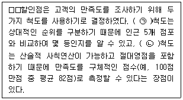
- ㉠-명목, ㉡-서열
- ㉠-명목, ㉡-등간
- ㉠-서열, ㉡-비율
- ㉠-서열, ㉡-등간
- ㉠-등간, ㉡-비율
(정답률: 40%)
62. 소매점의 상품기획에 대한 설명으로 가장 옳지 않은 것은?
- 상품카테고리를 기준으로 다양성, 전문성, 상품가용성을 계획한다.
- 상품관리에 대한 재무목표의 설정을 포함한다.
- 구색에 포함된 품목들의 품질 향상 방안을 포함한다.
- 지속성 상품이 아닌 유행성 상품의 구색편성은 상품기획에 해당하지 않는다.
- 시장상황 및 매출상황을 고려한 판매전략을 포함한다.
(정답률: 67%)
63. 유통업체의 상품관리 의사결정은 단품 관리수준과 상품카테고리 관리수준의 의사결정으로 분류할 수 있다. 단품 관리수준에 해당하는 의사결정사항에 해당하지 않는 것은?
- 품질
- 포장
- 구색
- 스타일
- 색상
(정답률: 50%)
64. CRM(customer relationship management)을 통하여 얻을 수 있는 효과로 적합하지 않은 것은?
- 상승판매(up-selling) 증가
- 교차판매(cross-selling) 강화
- 고객 유지율(customer retention) 증가
- 판매사이클(selling cycle) 증가
- 소비 지출 점유율(share of wallet) 증가
(정답률: 38%)
65. 유통마케팅의 패러다임이 거래지향적 마케팅에서 관계지향적 마케팅으로 전환되면서 나타난 변화에 대한 설명으로 옳지 않은 것은?
- 범위의 경제에서 규모의 경제로 경제 패러다임이 변화되었다.
- 시장점유율보다 고객점유율에 초점을 맞춘다.
- 단기적 매출 증가보다 장기적 고객자산 증가를 중요시한다.
- 단품보다는 수명이 더 긴 상표에 대한 경험의 개선을 강조한다.
- 세분화 및 표적시장 선정보다는 바람직한 고객포트폴리오 구축에 힘쓴다.
(정답률: 55%)
66. 성장기에 속한 제품의 마케팅 믹스전략에 대한 설명으로 옳은 것은?
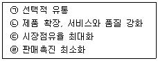
- ㉠, ㉡
- ㉡, ㉢
- ㉢, ㉣
- ㉡, ㉣
- ㉠, ㉣
(정답률: 60%)
67. 소매점에서 카테고리 캡틴(category captain)을 활용하는 이유로서 가장 옳지 않은 것은?
- 가격설정, 촉진활동 등의 위임을 통한 해당 카테고리 관리의 부담 감소
- 고객에 대한 이해 증진에 협력함으로써 해당 카테고리 전반의 수익 증진
- 재고품절의 방지를 통한 관련된 손해의 회피 및 서비스 수준의 향상
- 해당 카테고리 품목의 여타 납품업체들과의 구매협상 노력을 생략하여 비용 절감
- 해당 카테고리를 구성하는 전체 브랜드들의 균형적 성장을 통한 벤더 관계 개선
(정답률: 28%)
68. 다음 사례의 H백화점이 A상품에 수행한 가격결정방식은?
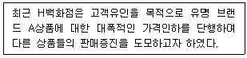
- 노획 가격결정(captive pricing)
- 단위 가격결정(unit pricing)
- 손실 유도 가격결정(loss leader pricing)
- 이원 가격결정(two-part pricing)
- 묶음 가격결정(price bundling)
(정답률: 59%)
69. 가맹본부가 인식하는 가맹점 성공요인의 하나인 프랜차이즈 시스템의 질(system quality)을 결정하는 변수로 가장 옳지 않은 것은?
- 종업원간의 팀웍
- 양질의 가맹점 표준
- 신속하고 친절한 서비스
- 좋은 상권
- 운영시스템의 효율성
(정답률: 38%)
70. 판매를 원하는 모든 사업자들에게 개방되어 있는 온라인 시장 혹은 마켓 플레이스(market place)를 무엇이라 하는가?
- 소셜 커머스
- 오픈마켓
- 모바일 쇼핑
- 카탈로그 쇼핑
- 포털
(정답률: 66%)
4과목: 유통정보
71. 유통정보로부터 의미 있는 고객 성향과 패턴을 알아내기 위해 데이터마이닝을 활용한다. 주로 사용하는 기법과 그에 대한 설명으로 가장 옳지 않은 것은?
- 분류 - 범주형 자료이거나 이산형 자료일 때 주로 사용하며, 이미 정의된 집단으로 구분하여 분석하는 기법
- 추정 – 연속형이나 수치형으로 그 결과를 규정, 알려지지 않은 변수들의 값을 추측하여 결정하는 기법
- 예측 – 미래의 행동이나 미래 추정치의 예측에 따라 구분되는 것으로 분류나 추정과 유사 기법
- 유사통합 – 데이터로부터 규칙을 만들어내는 것으로 어떠한 것들이 함께 발생하는지에 대해 결정하는 기법
- 군집화 – 분류와 같이 이미 정의된 집단이 있어 이를 기준으로 구분하고 이와 유사한 자료를 모으고, 분석하는 결정 기법
(정답률: 19%)
72. 정보보안의 위협과 관련된 용어에 대한 내용으로 옳지 않은 것은?
- 에드웨어 - 인터넷 광고주들이 컴퓨터 사용자의 동의 없이 광고를 보여줄 수 있도록 하는 것
- 트래픽패딩 – 이메일, 메신저, 문자메시지 등 다양한 방법으로 정상적인 메시지로 위장하여, 거짓정보를 주어 사용자를 속이는 가짜 바이러스
- 스니퍼 – 네트워크에서 데이터의 흐름을 모니터 할 수 있는 프로그램이나 장치
- 패킷변조 – 인터넷을 통해 전송 중인 패킷의 내용을 변경하거나 네트워크에 침투하여 컴퓨터 디스크의 데이터를 변경하는 것
- 권한 상향 조정 – 시스템의 손상을 입힐 목적으로 접근하는 사용자에게 당초에는 허가되지 않은 권한을 시스템이 승인하도록 유도하는 과정
(정답률: 39%)
73. 웹로그 파일 중, “웹 사이트 방문자가 웹 브라우저를 통해 사이트 방문 시, 브라우저가 웹 서버에 파일을 요청한 기록과 시간, IP에 관련된 정보 등의 기록을 남기는 것”을 뜻하는 용어로 가장 옳은 것은?
- Signal log
- Error log
- Referrer log
- Tip log
- Access log
(정답률: 54%)
74. 인터넷 조사를 통해 얻을 수 있는 정보의 내용으로 가장 옳지 않은 것은?
- 소비자 반응정보
- 회원가입정보
- 로그 파일(log file)정보
- 쿠키(cookie)정보
- 회원의 아이디와 패스워드
(정답률: 63%)
75. 웹 언어 중 HTML에 대한 설명으로 가장 옳지 않은 것은?
- HTML은 SGML(Standard Generalized Markup Language)을 모태로 만들어진 표준언어이다.
- HTML에서 웹 페이지의 제목, 문단, 그리고 하이퍼링크와 같은 내용들은 모두 꺾쇠('<'과'>')에 둘러싸인 '태그'로 작성된다.
- 1989년 팀 버너스 리가 WWW의 하이퍼텍스트 시스템을 고안하면서 최초의 웹 서버와 웹 브라우저 그리고 HTML이 탄생되었다.
- HTML5는 기존의 플러그인들을 번거롭게 설치할 필요 없이 동영상이나 오디오 플레이어를 브라우저 상에서 곧바로 구현하는가 하면 포토샵 같은 프로그램이나 게임까지 브라우저로 즐길 수 있게 구현한다.
- XML과 달리 규정된 태그만 사용하는 것이 아닌 사용자가 원하는 태그를 만들어 응용 프로그램에 적용 가능하다.
(정답률: 42%)
76. 비정형데이터와 가장 거리가 먼 것은?
- 소설미디어에서의 주고 받는 텍스트로 구성된 실시간 대화
- 인터넷 매체 속에서 업로딩되는 사진
- 뉴스 동영상
- 웹로그, 인터넷 검색 인덱싱 등의 로그파일
- 인터넷 사이트 회원 로그인 시 사용하는 비밀번호
(정답률: 42%)
77. B2C 전자상거래 성공요인으로 가장 옳지 않은 것은?
- 컴퓨터 및 통신기술을 통해 시장요구 사항에 신속하게 대응할 수 있는 능력을 갖춰야 한다.
- 주문된 제품 혹은 서비스를 신속하게 고객에게 전달할 수 있는 효율적인 배송프로세스를 갖춰야 한다.
- 시스템의 페이지 로딩속도가 빠르며, 언제나 접속 가능하고 중간에 끊김이 없어야 한다.
- 보안위협으로부터 거래데이터를 보호하기 위한 암호화 및 인증기술이 적용된 지불시스템을 갖춰야 한다.
- 신속한 과잉 사업 확장을 위해 재무적인 측면에서 비용대비 수익 비율을 최소화 시켜야 한다.
(정답률: 67%)
78. 지식경영의 효과로 가장 옳지 않은 것은?
- 기업은 지식경영을 통해 체계적인 지식기반을 구축할 수 있다.
- 기업은 효율적인 지식관리를 통해 급변하는 경영환경에 대한 대처능력을 배양할 수 있다.
- 기업은 지식경영을 통해 내부역량을 향상시켜 고객만족도를 높임으로써 기업경쟁력을 강화시킬 수 있다.
- 기업은 지식경영을 활용함으로써 고객과의 관계유지를 통한 새로운 비즈니스 환경에 적응할 수 있다.
- 고객과의 관계증진을 위한 지식경영을 활용함으로써 매스마케팅을 실질적으로 구현시킬 수 있다.
(정답률: 56%)
79. 다음 글상자가 뜻하는 용어로 가장 옳은 것은?
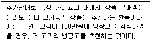
- 업셀링(Up-selling)
- e-selling
- 크로스셀링(Cross-selling)
- 텔레마케팅
- 프로모션(Promotion)
(정답률: 68%)
80. 유통정보시스템의 수평적 통합으로 발생하는 이점으로 가장 옳은 것은?
- 계열구성원 서로 간의 이해수준을 높여 경로갈등의 해결 및 조정이 용이해진다.
- 중복된 경영활동을 통합‧조정함으로써 중복되는 영업간접비용을 절감할 수 있다.
- 유통·생산시설 등의 공동 이용으로 고정비용의 절감 등 시너지 효과를 기대할 수 있다.
- 판매망의 다양화와 시장 확대로 유통경로에 대한 지배력을 강화할 수 있다.
- 외부 환경변화에 대하여 생산 및 유통정책을 신속히 수정할 수 있다.
(정답률: 27%)
81. 의사결정자들 간의 의사소통에 영향을 미치는 요소 중 물리적 위치와 시간에 따른 GDSS(그룹의사결정지원시스템)의 물리적 장치의 형태가 가장 올바르게 짝지워진 것은?
- 같은 시간 - 같은 장소 : Voice mail
- 같은 시간 - 다른 장소 : Conference calls
- 다른 시간 - 같은 장소 : Screen sharing
- 다른 시간 - 다른 장소 : Shared office
- 같은 시간 - 같은 장소 : E-mail
(정답률: 57%)
82. 의사결정 과정의 순서를 가장 올바르게 나열한 것은?
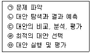
- ㉠ → ㉡ → ㉢ → ㉣ → ㉤
- ㉠ → ㉢ → ㉡ → ㉣ → ㉤
- ㉠ → ㉡ → ㉢ → ㉤ → ㉣
- ㉠ → ㉢ → ㉡ → ㉤ → ㉣
- ㉠ → ㉢ → ㉣ → ㉡ → ㉤
(정답률: 45%)
83. 지식경영과 관련한 형식지의 예로 가장 옳지 않은 것은?
- 제품사양
- 매뉴얼
- 화학공식
- 조직문화
- 컴퓨터 프로그램
(정답률: 58%)
84. 전자지불시스템이 성공적으로 활용되기 위해 충족되어야 할 요건으로 가장 옳지 않은 것은?
- 결제시스템이 의도하였던 제 기능을 수행하고, 사용자들이 안전하다고 믿을 수 있도록 사기거래를 방지할 수 있어야 한다.
- 범죄 공격의 타겟이 될 수 있으므로, 인터넷을 통해 전송되는 지불관련 정보의 불법적 노출, 변조 혹은 파괴를 예방할 수 있어야 한다.
- 신용카드 정보와 신원정보 등 사용자 정보에 대한 실명성이 보장되어야 한다.
- 거래 당 비용이 거의 무시할 정도로 적어야 한다.
- 누구나 전자상거래의 대금결제를 위해 쉽게 사용할 수 있도록 사용자 인터페이스를 설계하여야 한다.
(정답률: 40%)
85. 바코드 기술과의 차별 요소측면에서 RFID(Radio Frequency IDentification)의 특성에 대한 설명으로 가장 옳지 않은 것은?
- RF 태그는 냉온, 습기, 열 등의 열악한 환경에서도 사용된다.
- RFID 기술은 고속이동하는 상품을 인식할 수 있다.
- RFID 기술은 장애물 및 방향에 관계없이 정보 인식이 가능하다.
- RFID 기술은 무선통신 매체를 이용하여 비접촉식으로 동시에 다수 태그의 인식이 가능하다.
- RFID 기술은 관리레벨에 있어서 개품관리보다는 상품그룹별 관리에 적합하다.
(정답률: 49%)
86. 다음 글상자의 ㉠, ㉡을 뜻하는 용어로 옳은 것은?
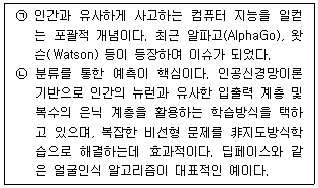
- ㉠-머신러닝, ㉡-인공지능
- ㉠-셀프러닝, ㉡-엑스퍼트러닝
- ㉠-딥러닝, ㉡-시각화
- ㉠-인공지능, ㉡-딥러닝
- ㉠-머신러닝, ㉡-엑스퍼트러닝
(정답률: 65%)
87. GS1 식별코드 중에서 상품식별코드는?
- GLN
- GRAI
- GSIN
- GINC
- GTIN
(정답률: 43%)
88. ( ㉠ ), ( ㉡ )에 들어갈 용어로 가장 옳은 것은?(문제 오류로 가답안 발표시 2번으로 발표되었지만 확정답안 발표시 2, 4번이 정답처리 되었습니다. 여기서는 가답안인 2번을 누르시면 정답 처리 됩니다.)
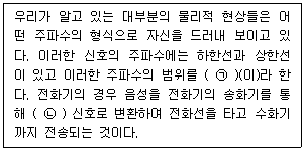
- ㉠-보오, ㉡-디지털
- ㉠-대역폭, ㉡-아날로그
- ㉠-보오, ㉡-아날로그
- ㉠-대역폭, ㉡-디지털
- ㉠-보오, ㉡-부호화
(정답률: 54%)
89. 지식의 변환과정을 통하여 개인의 지식인 개인지가 조직차원의 지식인 조직지로 확산되어 가는 과정을 서술한 것으로, ( ㉠ ), ( ㉡ ), ( ㉢ ), ( ㉣ )안에 들어갈 용어를 순서대로 올바르게 나열한 것은?
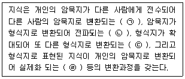
- ㉠-사회화, ㉡-내면화, ㉢-외부화, ㉣-종합화
- ㉠-사회화, ㉡-외부화, ㉢-종합화, ㉣-내면화
- ㉠-내면화, ㉡-외부화, ㉢-사회화, ㉣-종합화
- ㉠-내면화, ㉡-사회화, ㉢-종합화, ㉣-외부화
- ㉠-사회화, ㉡-종합화, ㉢-내면화, ㉣-외부화
(정답률: 55%)
90. 조직의 데이터를 수집하고 관리하는 일련의 절차에 관련된 사항으로 가장 옳지 않은 것은?
- 운영계층에서 매일 실시간으로 발생하는 데이터를 수집하고, 관리하는 거래처리정보시스템은 정확하고 구체적인 데이터를 다룰 수 있도록 구축되어야 한다.
- 각각의 운영 데이터베이스로부터 발생하는 대량의 데이터를 통합관리할 수 있도록 데이터웨어하우스를 구축한다.
- 중요한 데이터를 다른 사용자가 알아보지 못하도록 은닉하고, 변형시켜 조직내부 구성원 중 인가받은 경우만 접근할 수 있도록 지원하는 기능을 정보세탁이라 한다.
- 데이터 마이닝은 원래의 자료 그 자체만으로는 제공되지 않는 정보를 추출하기 위해 다양한 기술을 활용하여 대량의 정보 속에서 일정한 경향과 관계를 찾아내고, 미래 행위를 예측하고 의사결정을 이끌어 내도록 지원한다.
- W.H.Inmon에 의하면 데이터웨어하우스를 경영자의 의사결정을 지원하는 주제 중심적(subject-oriented)이고 통합적(integrated)이며, 비휘발성(nonvolatile)이고, 시간에 따라 변화(time-variant)하는 데이터의 집합이라 정의하였다.
(정답률: 53%)
㉡은 "매장 위치의 중요성"을 나타내는데, 이는 매장의 위치가 고객들의 접근성과 편의성에 큰 영향을 미치기 때문입니다. 따라서 매장 위치를 잘 선택하고 유지하는 것이 중요합니다.
㉢는 "물류체계의 중요성"을 나타내는데, 이는 상품을 효율적으로 운송하고 재고를 관리하기 위한 물류체계가 중요하다는 것을 의미합니다. 따라서 효율적인 물류체계를 구축하여 비용을 절감하는 것이 중요합니다.